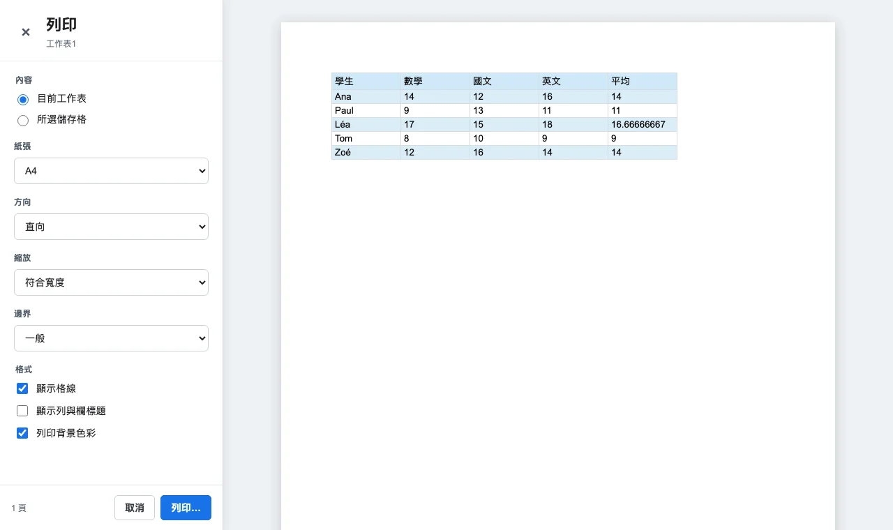

列印
檔案 › 列印… 或 Ctrl P 按列印效果顯示頁面。

| 設定 | 選項 |
|---|---|
| 內容 | 當前工作表，或開啟視窗前選擇的儲存格 |
| 紙張 | A4、Letter |
| 方向 | 縱向、橫向 |
| 縮放 | 實際大小；符合寬度：所有欄在一頁寬度內；符合單頁 |
| 邊界 | 普通、窄、寬 |
| 格式 | 格線、欄列標題、填滿色彩 |
列印… 開啟瀏覽器的視窗，可選擇印表機或儲存為 PDF。
- 只列印儲存格及其格式：不列印圖表、圖片和走勢圖。
- 隱藏的列和欄不列印。
- 核取方塊列印為 TRUE 或 FALSE。
- 每次列印一張工作表。
要連同圖表一起列印，請儲存活頁簿並用 Excel 或 LibreOffice 開啟。